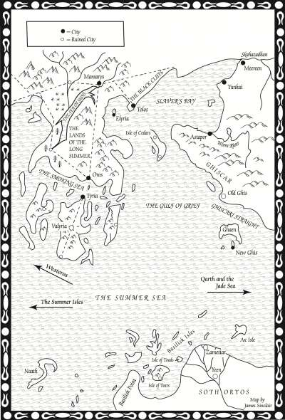
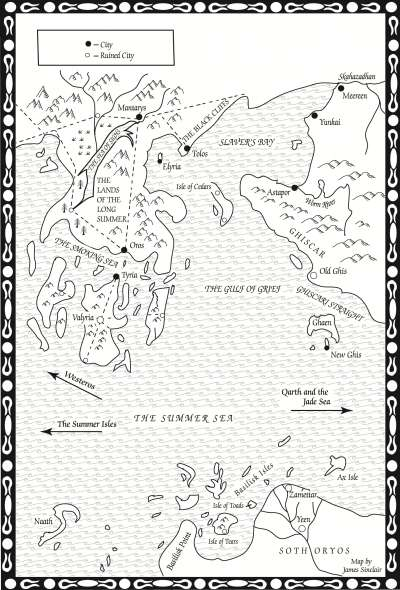

Worm River
The Worm River is a river on the eastern continent. Its headwaters begin in the hills near Ghiscar and its mouth lies next to Astapor, where it flows into Slaver’s Bay. It has many bends.
Map on Next page.

The Worm River is a river on the eastern continent. Its headwaters begin in the hills near Ghiscar and its mouth lies next to Astapor, where it flows into Slaver’s Bay. It has many bends.
Map on Next page.
